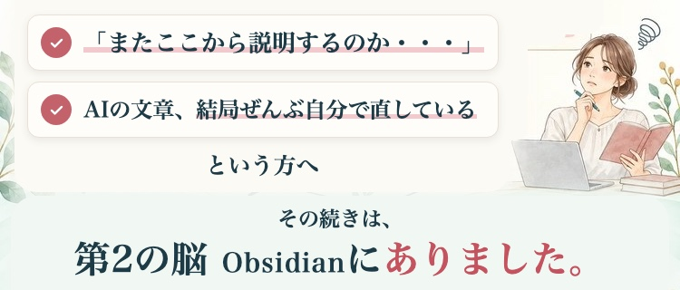
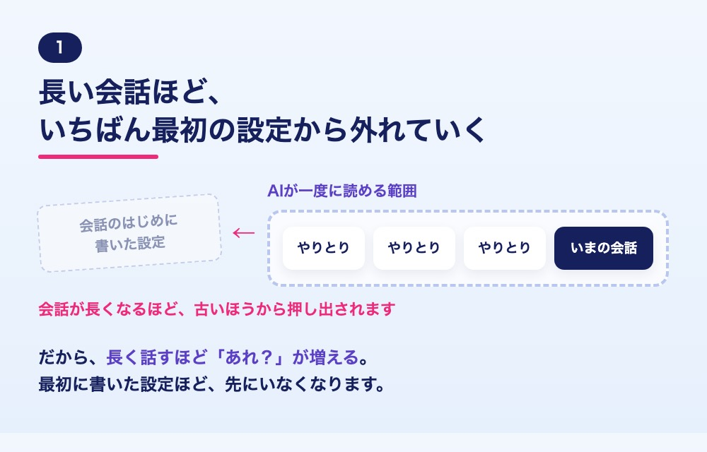
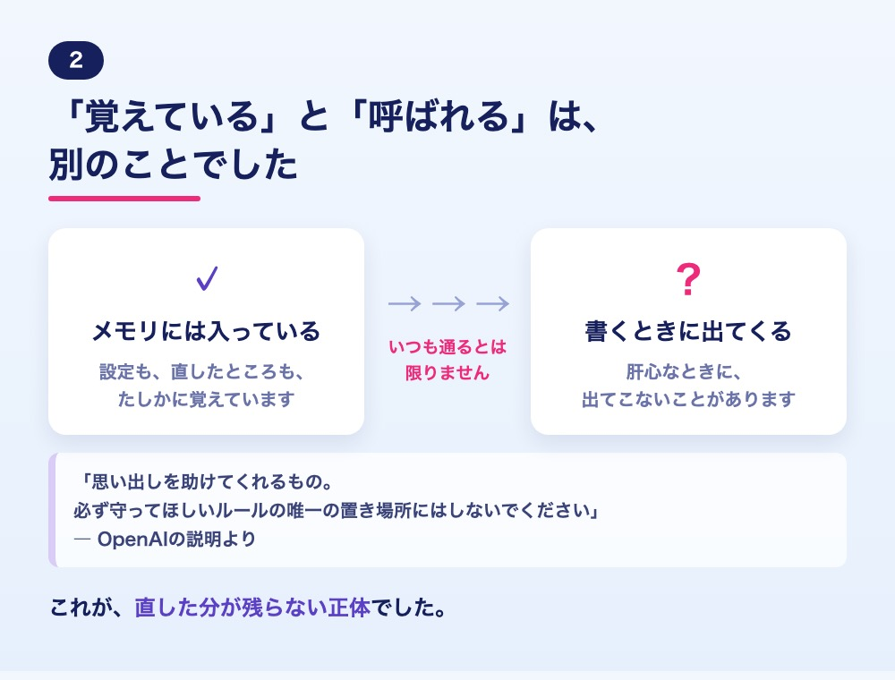

メールアドレスを入れるだけで、 すぐにお届けします＾＾
スタートキットを受け取る（無料）
こんなこと、ありませんか？
- AIに頼むたびに、自分の仕事のこと、お客様のことをまた打ち込んでいる
- AIが書いた文章を、結局、最後は自分で書き直している
- 前に直したところを、また直している
- 学んできたことが増えすぎて、AIにどう渡せばいいのか分からない
ひとつでも当てはまったら、 きっとお役に立てます＾＾
あなたの使い方が悪いんじゃないんです
AIが、 あなたのことを覚えきれない 理由は2つあります。


だから、記録を「自分の手元」に置く
いま
毎回、AIに説明する
AIっぽい下書き
自分で直す
（次の日も、また説明）
これから
あなたの記録をObsidianに置く
AIがそれを読んでから書く
直したところも残る
AIを乗り換えても、 あなたの記録は手元に残ります＾＾
受け取れるもの
1 第2の脳 Obsidianの育て方（小冊子）
あなたの仕事のこと、お客様と向き合って気づいたこと。 そんな記録を、AIを乗り換えても残る場所に ためていく方法です。
2 私のお仕事紹介シート
質問に答えて、仕事やお客様のことを１枚に。 次にAIへ文章を頼むときの説明に使えます。
受け取ったら、この3つだけ
- STEP1メールで受け取る（送るとすぐ届きます）
- STEP2今日の3分トレ：いつものAIに「私について覚えていることを、全部教えてください」と聞いてみる
- STEP3お仕事紹介シートで、最初の１枚を作る
むずかしい準備は、いりません＾＾


＼ メールアドレスを入れるだけ ／
送ると、info@belle-coach.com から スタートキットがすぐに届きます＾＾
※届いていなければ、迷惑メールフォルダや 「プロモーション」タブも見てみてくださいね。
新しいAIを追いかけ続ける半年と、 あなたの記録が積み上がる半年。
あなたは、どちらを選びますか？
雪野由香 AI推薦設計コンサルタント／集まる集客カレッジ講師